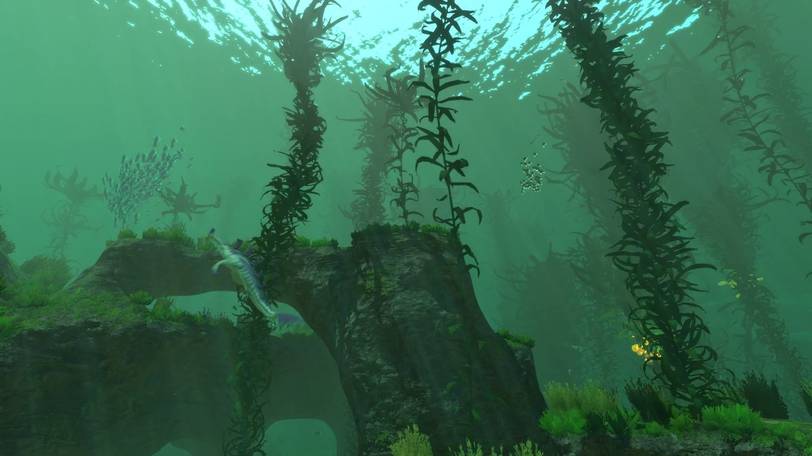
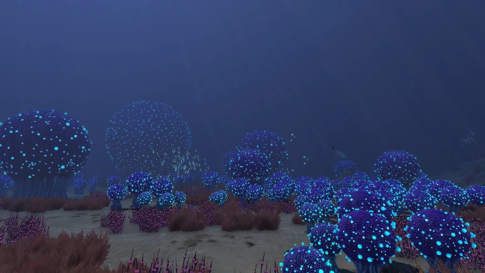
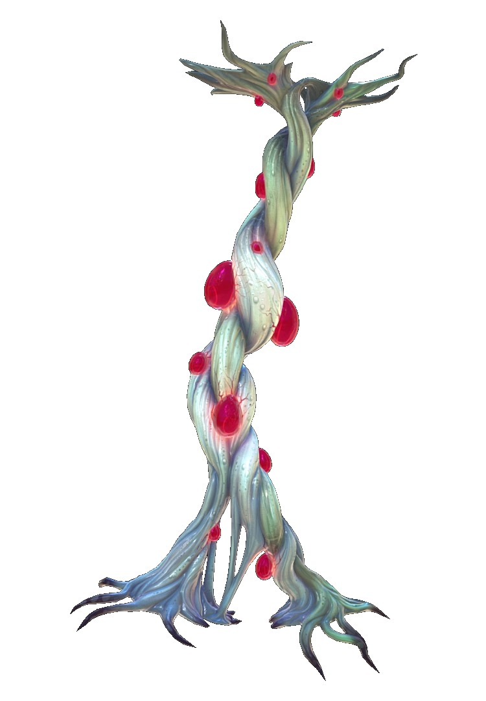
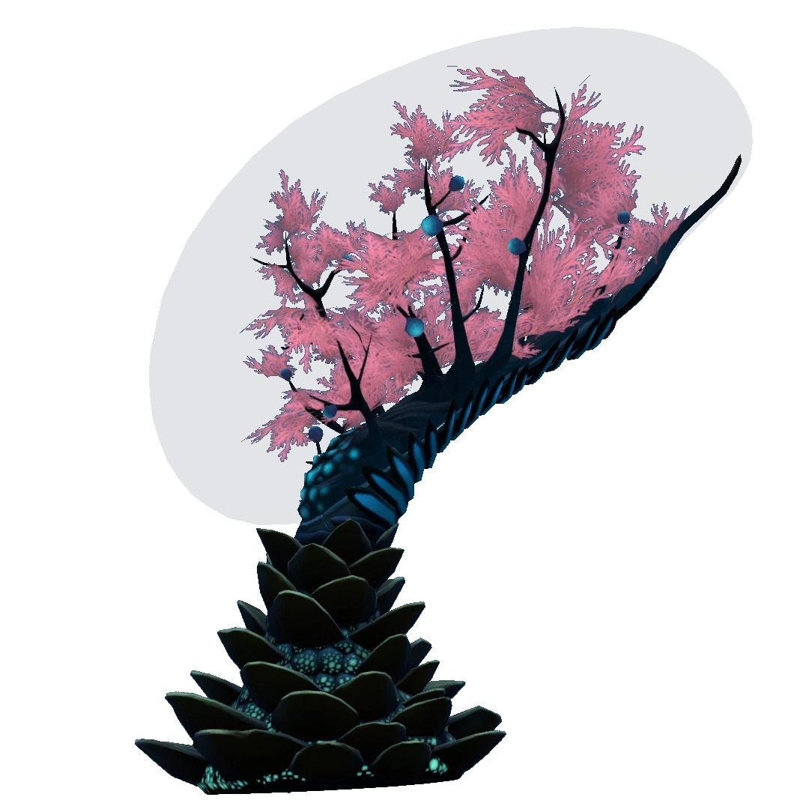
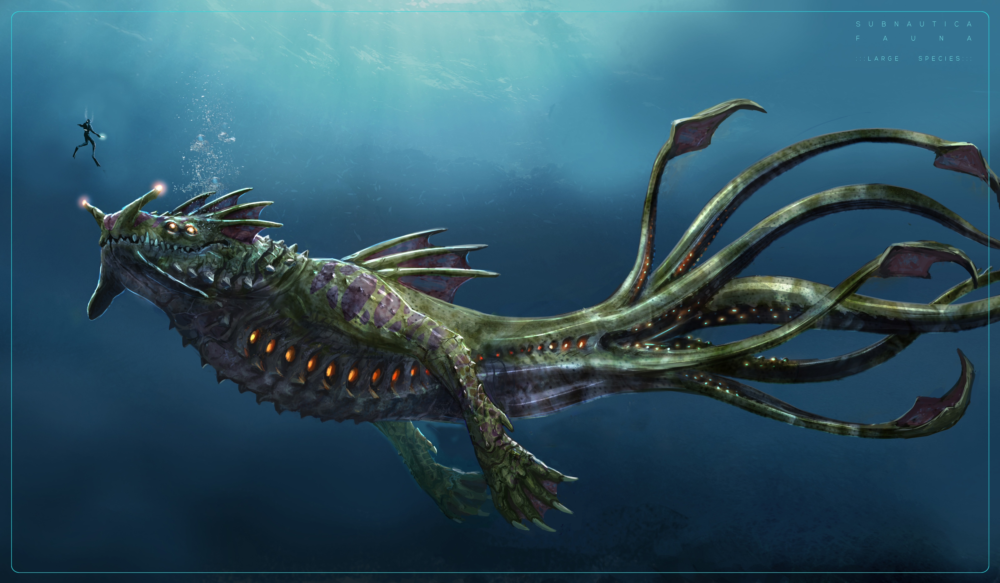

Biomas
Bosque de algas
Los bosques de algas son uno de los biomas más diversos, debido a la variedad de fauna y flora que habitan en ellos. Estos biomas se caracterizan por la abundancia de las enredaderas y poseen un marcado tono verdoso en el agua.
Zona de Bulbos
La Zona Bulbos se caracteriza por pequeñas fisuras y salientes en un área similar al de unas dunas arenosas. También es rica en pequeñas algas marrones y una gran variedad de plantas con tonalidades azul-morado, la mas notable siendo el Arbusto Bulbo.
Flora
Raíz de sangre
Las sanguinarias son plantas grandes con forma de raíces que emiten un brillo bioluminiscente de color blanco verdoso . Se extienden de una pared a otra, o desde el techo de la cueva hasta el fondo. Cada raíz está formada por múltiples raíces más pequeñas entrelazadas entre sí.
Árbol membrana
Esta entidad desafía una categorización clara. Consiste en más de una especie de coral que trabajan en conjunto para crear un microcosmos aislado encerrado dentro de una membrana translúcida. Las condiciones homeostáticas internas, que se encuentran creciendo exclusivamente en rocas basálticas en los grandes arrecifes, son considerablemente más cálidas y más densas con vida microbiana que el ambiente exterior, y la fauna de color púrpura brillante del interior probablemente morirá rápidamente si se expone.
Fauna
Dragon Marino
Usa sus brazos y tentáculos para nadar a gran velocidad es capaz de ejercer más de 300 toneladas de fuerza al embestir.
Leviatán Gargantúa
El gigantesco Leviatán es inmune a la mayoría de los ataques convencionales, gracias a su gran tamaño y su piel resistente.